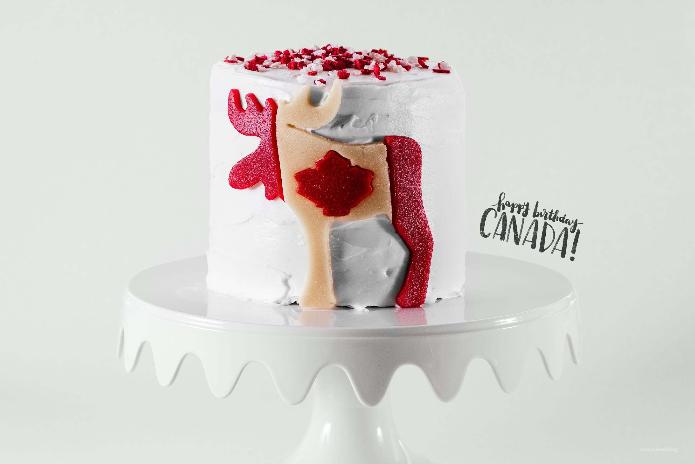

Marzipan Moose Cake
Happy 150th birthday Canada! I made an easy marzipan moose cake to celebrate :) Also, tips on how to make store-bought cake mix more dense for easy decorating. It’s Canada Day! This year is especially awesome because it’s Canada’s 150th birthday. Before we left on our Canadian adventure, I made a little vanilla cake, complete with maple vanilla frosting and Read More